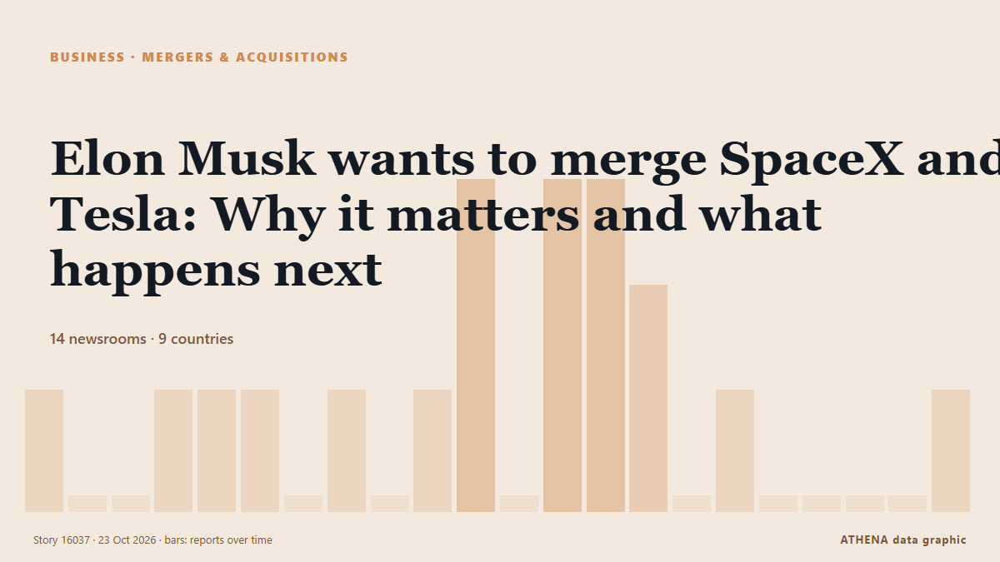

Elon Musk wants to merge SpaceX and Tesla: Why it matters and what happens next

Elon Musk is considering a merger of SpaceX and Tesla that could create a corporate giant spanning rockets, electric vehicles and AI, but investor approval and regulatory hurdles could stand in the… from IOL
Reported independently by 14 outlets in 9 countries since 20 Oct, first by New York Times Business; coverage is fading. ATHENA rates the risk low (1.4/10), driven mainly by the severity of the harm described and its geographic and sector reach. Confidence is 88% (high), with 14 independent outlets corroborating it and an average source reliability of 74%. Newsrooms by country: United States (8), United Kingdom (3), South Africa (2). Coverage: 20 Oct to 23 Oct, 63 hours.
Why it matters: Company and investment news shows where capital is moving and which sectors are gaining or losing ground.
What changed: 6 new reports from 6 newsrooms in the 24 hours to 23 Oct.
At a glance
Selected, scored and written by ATHENA's published methodology. No editor intervenes in individual events. How this is produced ›
| 20 Oct 16:17 UTC | 1 |
|---|---|
| 20 Oct 19:17 UTC | 0 |
| 20 Oct 22:17 UTC | 0 |
| 21 Oct 01:17 UTC | 1 |
| 21 Oct 04:17 UTC | 1 |
| 21 Oct 07:17 UTC | 1 |
| 21 Oct 10:17 UTC | 0 |
| 21 Oct 13:17 UTC | 1 |
| 21 Oct 16:17 UTC | 0 |
| 21 Oct 19:17 UTC | 1 |
| 21 Oct 22:17 UTC | 3 |
| 22 Oct 01:17 UTC | 0 |
| 22 Oct 04:17 UTC | 3 |
| 22 Oct 07:17 UTC | 3 |
| 22 Oct 10:17 UTC | 2 |
| 22 Oct 13:17 UTC | 0 |
| 22 Oct 16:17 UTC | 1 |
| 22 Oct 19:17 UTC | 0 |
| 22 Oct 22:17 UTC | 0 |
| 23 Oct 01:17 UTC | 0 |
| 23 Oct 04:17 UTC | 0 |
| 23 Oct 07:17 UTC | 1 |
Why these numbers
Importance
Risk
Confidence
The reporting — who reported it, and when
headline as published · opens the original- New York Times Business · United StatesInvestors in Anticipation Over Musk’s Next Big SpaceX Deal
- SBS News · AustraliaElon Musk has hinted at a SpaceX-Tesla mega merger. Could it really happen?
- The National · United Arab EmiratesWhat a merger of SpaceX and Tesla would mean
- BBC News · United KingdomElon Musk confirms he is considering merging Tesla and SpaceX
- CNBC World · United StatesSpaceX stock jumps 10% after earnings beat and Musk hints at Tesla tie-up
- New York Times Business · United StatesElon Musk Says SpaceX and Tesla Are Exploring a Merger
- The Guardian · United KingdomTesla beats earnings projections after Musk floats SpaceX merger plan
- BBC News · United KingdomWhy is Elon Musk plotting a mega-merger of SpaceX and Tesla?
- New York Times Business · United StatesTesla Profit Slumps as Elon Musk’s Car Company Considers Merging With SpaceX
- Cyprus Mail · CyprusMusk’s comments complicate $3.5 trillion SpaceX-Tesla merger talks
- Fortune · United StatesElon Musk’s dream merger is a nightmare for SpaceX shareholders
- The Korea Times · South KoreaMusk's public endorsement of SpaceX-Tesla deal may throw a wrench in talks
- NDTV · IndiaElon Musk's Public Endorsement Of SpaceX-Tesla Merger Worries Insiders
- News24 · South AfricaNews24 | SpaceX-Tesla merger a ‘good idea’, says Musk – but China will be a thorny issue
- Fast Company · United StatesElon Musk’s flying Roadster was an ad for a SpaceX and Tesla merger after all
- Fortune · United StatesThe biggest hurdle to a SpaceX merger with Tesla isn’t Elon Musk. It’s Tesla’s shareholders
- The Next Web · NetherlandsMusk’s backing for a SpaceX-Tesla merger rattled insiders, Reuters reports
- CNBC World · United StatesSpaceX and Tesla have high election stakes as Elon Musk pours $366 million into campaigns
- IOL · South AfricaElon Musk wants to merge SpaceX and Tesla: Why it matters and what happens next